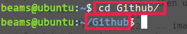
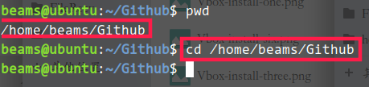

Part three: General Purpose Commands¶
ls¶
ls will show folders under the place where your terminal work, if we ctrl+alt+t to open a terminal then
we use ls. It will show you like bellow.
.. image:: /source/image/ls-one.png
There are many options for you like -l, -a and so on. More details use man ls to check.
cd¶
cd can get into any folder you want and there are some points you need to know. At least two, for one thing,
Relative paths, we can simply understand it if the folder you want to get into in ls list. For another,
An absolute path, it not in the ls list. If you want to know absolute path of thw folder you are working
then use pwd, it will show you.
relativepath
absolutepath
pwd¶
Like I said above, pwd will return you the absolutepath of the palce your terminal are woking now.
mkdir¶
mkdir can help you to build a new folder, and if you need to build folders more than 3, then you need -p
parameter. Like mkdir -p hello/hello/hello.
touch¶
touch can help you to build a new file like .txt, .py, .md and so on. You just use it like touch hello.txt.
cat¶
cat is a powerful command, it has many works like show you the context of file.
More details check this web,
cat command examples
rm¶
rm can help you delete file or folder for you. You can use it like rm hello.txt, but if you want to
delete folders, you need one parameter -r like rm -r foldername.
mv¶
mv can move files or folders. You can use it like mv hello.txt /home/ if you want to make it for sure,
then cd /home && ls can help you. Not only move palce, but we can rename files or folders like mv hello.txt
helloworld.txt.
chown¶
chown can change permission of folders. But how to know we need to change
permission? When you meet this problem like permission denied, you maybe need to change it.
You can use it like sudo chown -R /home username, you need to change username to make it work correctly.
chmod¶
chmod can change permission of files or folder. You can use it like sudo chmod 777 /home/. What is the
difference between chmod and chown. Hope you find it by yourself.
grep¶
grep can match a string for you in a file. You can use it like grep a hello.txt to check if hello.txt
has a.
find¶
find can find everything you want to find in your OS. You can use it like sudo find / -name hello.txt
Then it will show you where is it.
ping¶
ping can help you to check if you connent to internet or not like ping www.baidu.com.
top¶
top can list the source using situation.
kill¶
kill can kill progress you want with PID like kill 9981.
pkill¶
pkill can kill progress you want with name like pkill Xorg.